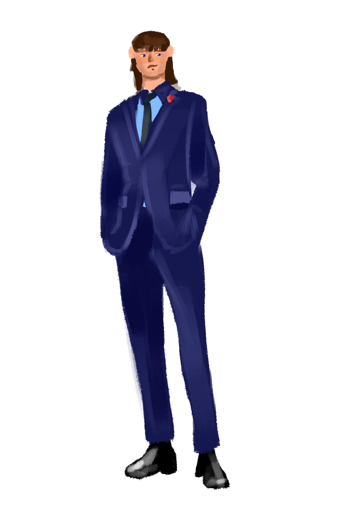

W śląskich technicznych zakładach naukowaych w Katowicach strój jest bardzo rzeczą. Uczniowie mają obowiązek nosić granatowe garnitury a pod nimi błękitne lub białe koszule. Każdy musi posiadać też czerwoną tarczę szkolną. Mężczyźni mają również obowiązek nosić krawat. Nauczyciele ubierają się elegancko. Nauczyciele często noszą garnitury a nauczycielki eleganckie sukienki.
